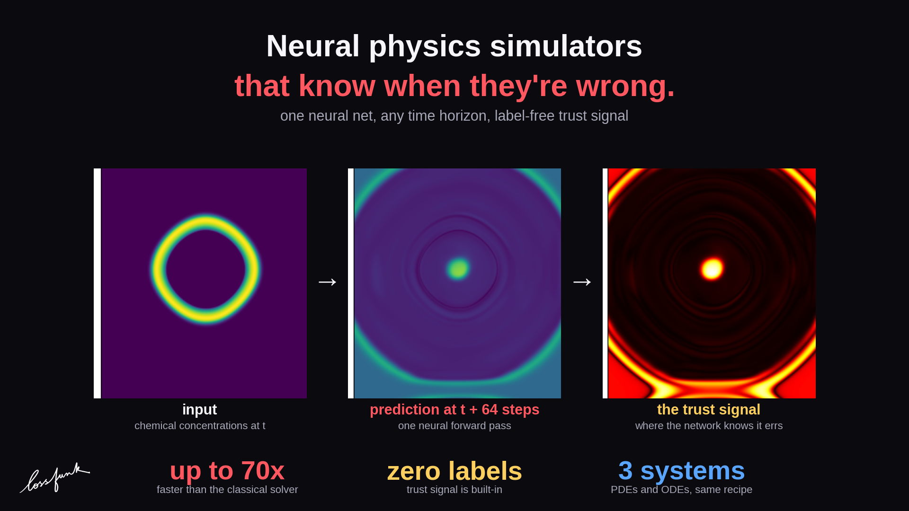
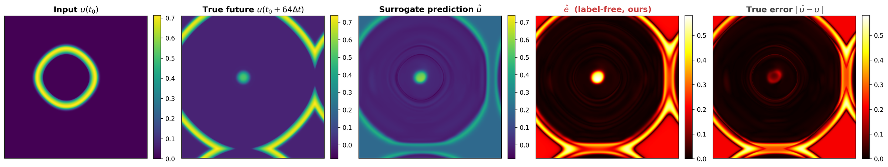
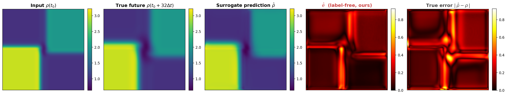
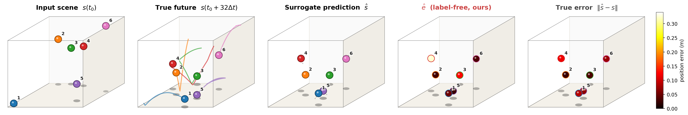
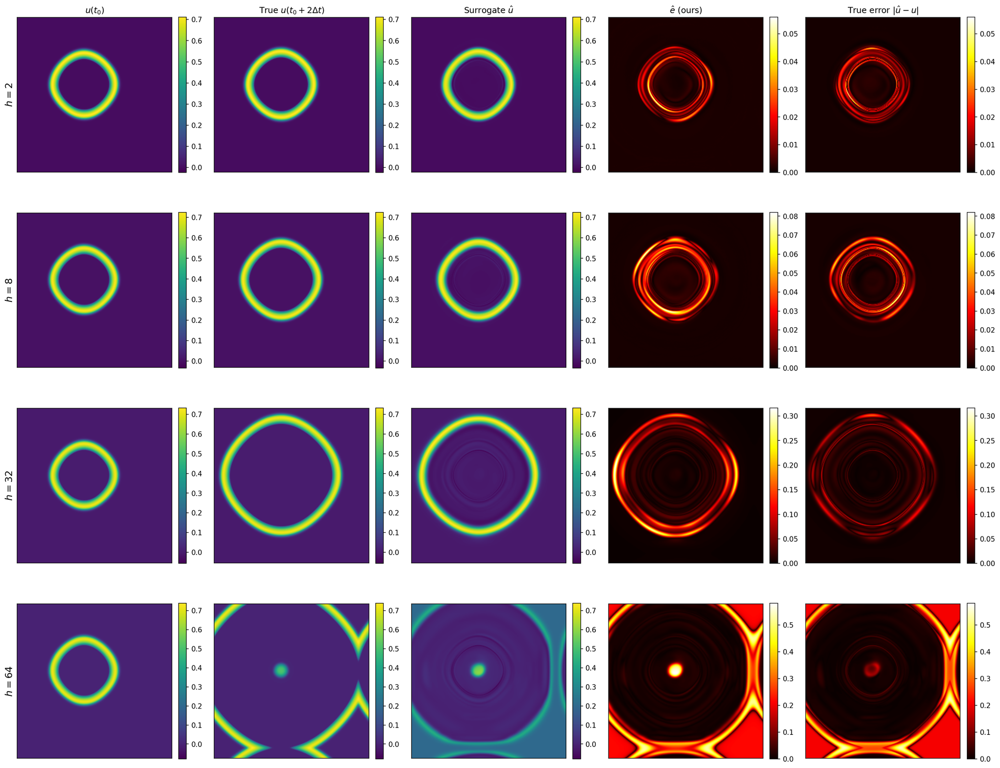
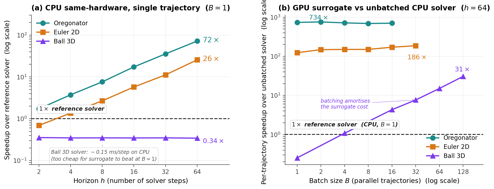
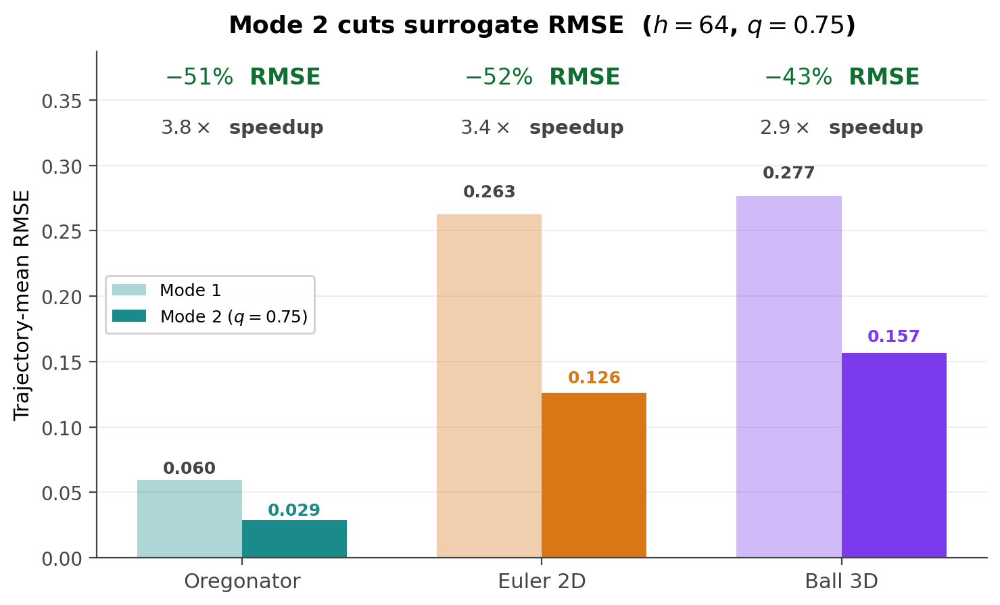
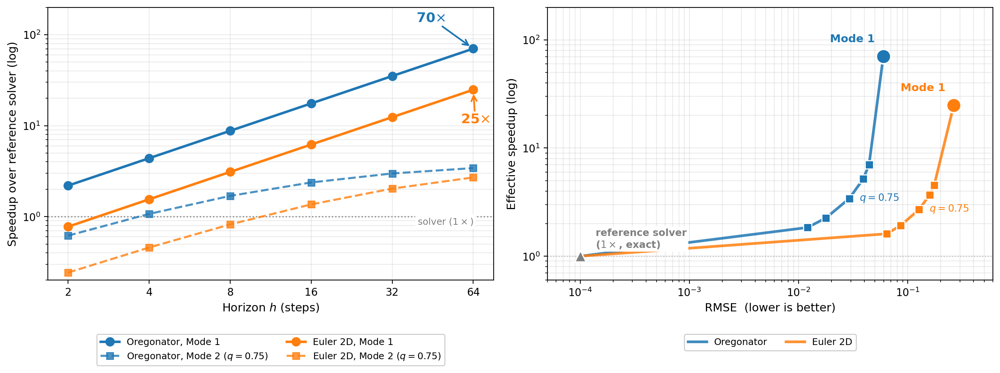
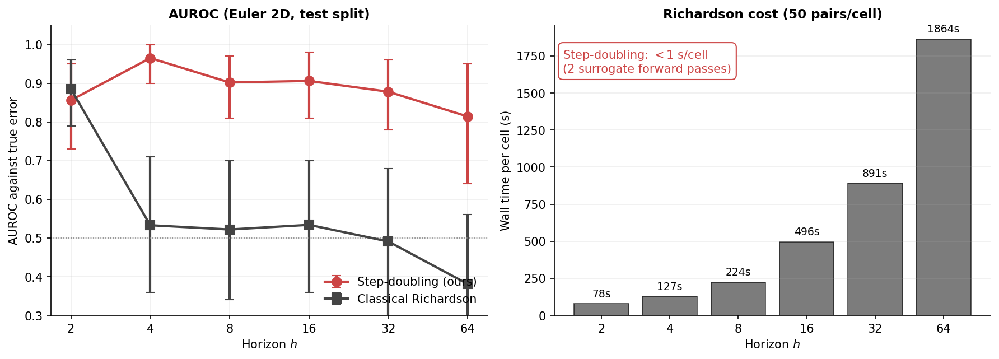

Neural physics simulators are fast. The hard part is knowing when to trust them: a surrogate can run 70x faster than a classical solver and quietly produce nonsense at deployment.
We trained one neural network to leap any number of simulator steps ahead in a single forward pass, on three different physical systems. Asking the same network for the same future in two different ways gives back two predictions. The disagreement between them is a per–cell trust signal that needs no ground–truth labels and falls out of forward passes we already had to run.
The rest of this page covers the recipe, the per–environment results, the speedup numbers, the safety net the trust signal enables at deployment, and a head–to–head against the classical analogue.
The trust signal, in one move
We train a single network \(f_\theta(s, T)\) that, given the current state \(s\) of a physical system, predicts the state \(T\) simulator steps later, for any \(T\) on the base–2 ladder \(\{1, 2, 4, 8, 16, 32, 64\}\). The training objective is supervised:
\[ \mathcal{L}_{\text{sup}}(\theta) \;=\; \mathbb{E}_{(s_0, s_T, T)\sim \mathcal{D}} \left\lVert \tilde{f}_\theta(s_0, T) - \tilde{s}_T \right\rVert_2^{2} \]
where \(\tilde{\cdot}\) denotes per-channel normalisation by training-set statistics. For any future you care about, the trained network can answer the same question two ways:
- The direct answer: \(f_\theta(s, T)\) – jump \(T\) steps in one forward pass.
- The doubled answer: \(f_\theta(f_\theta(s, T/2), T/2)\) – take two half–steps and compose them.
If the network has learned the dynamics correctly, the two answers must agree. Their disagreement is our trust signal:
\[ \hat{e}(s, T) \;=\; \left\lVert\, f_\theta(s, T) \;-\; f_\theta\!\left(f_\theta(s, T/2),\, T/2\right) \right\rVert_2 \]
The cost is two extra forward passes through the same network, with no calibration set and no retraining. The shape of \(\hat{e}\) depends on the state space. For grid PDEs (Oregonator, Euler 2D) the channels collapse at each spatial location and \(\hat{e}\) becomes a 2D map. For low–dimensional states (Ball 3D) \(\hat{e}\) is a per–ball scalar.
To gate a whole trajectory in Mode 2 below, we average the per–cell map into a single scalar
\[ \bar{e}(s, T) \;=\; \frac{1}{|\Omega|} \sum_{\Omega} \hat{e}(s, T), \]
where \(\Omega\) is the grid (or the set of balls). That trajectory–mean score is what ranks trajectories for the trust–gated fallback. The spatial map stays useful for inspection: it tells you where the prediction is fragile inside one trajectory.

Why we have to supervise the training
A tempting shortcut would be to train the network on the self–consistency loss alone, with no ground truth:
\[ \mathcal{L}_{\text{SC}}(\theta) \;=\; \mathbb{E}_{(s_0, T)\sim p} \left\lVert\, \tilde{f}_\theta(s_0, T) - \tilde{f}_\theta\!\left(f_\theta(s_0, T/2),\, T/2\right) \right\rVert_2^{2}. \]
The objective looks attractive because it needs no labels. It also has an easy global minimum that has nothing to do with physics: the identity map \(f_\theta(s, T) = s\) satisfies self–consistency exactly. Gradient descent finds it inside one epoch, on every system we tried:
| epoch | \(\mathcal{L}_{\text{SC}}\) | val MSE vs GT | trivial–fixed–point distance | |
|---|---|---|---|---|
| Oregonator | 1 | \(3.3\!\times\!10^{-3}\) | 0.031 | \(<10^{-4}\) |
| 5 | \(2.8\!\times\!10^{-6}\) | 0.030 | \(<10^{-4}\) | |
| 10 | \(2.0\!\times\!10^{-6}\) | 0.029 | \(<10^{-4}\) | |
| 20 | \(2.3\!\times\!10^{-6}\) | 0.037 | \(<10^{-4}\) | |
| Euler 2D | 1 | \(5.9\!\times\!10^{-3}\) | 5.78 | \(4.8\!\times\!10^{-3}\) |
| 5 | \(1.6\!\times\!10^{-5}\) | 9.40 | \(8.5\!\times\!10^{-4}\) | |
| 10 | \(5.8\!\times\!10^{-6}\) | 7.38 | \(3.9\!\times\!10^{-4}\) | |
| 20 | \(2.7\!\times\!10^{-6}\) | 8.23 | \(8.8\!\times\!10^{-5}\) |
The lesson is the asymmetry. Training has to be supervised so the network learns the actual dynamics. Once the dynamics are in there, self–consistency is free to do its job at deployment as the trust signal \(\hat{e}\).
Three different physical systems, one recipe
The trust signal isn't tuned to a particular equation. We test it on three systems that span the modelling spectrum: a stiff reaction–diffusion PDE, a nonlinear hyperbolic conservation law, and a rigid–body ODE with discrete collision events. The dynamics, the natural state space, and the reference numerical method are all different. The surrogate and the probe are the same.
Environment 1 · Reaction–diffusion PDE
Belousov–Zhabotinsky waves (Oregonator)
The Oregonator model captures the Belousov–Zhabotinsky reaction, a real chemistry experiment where colored waves and spirals spontaneously appear and travel across a dish. Mathematically it's a two–variable reaction–diffusion PDE for activator \(u\) and inhibitor \(v\):
\[ \begin{aligned} \partial_t u &= D\,\nabla^{2} u + \tfrac{1}{\varepsilon}\!\left(u(1-u) - f\,v\,\tfrac{u-q}{u+q}\right), \\ \partial_t v &= D\,\nabla^{2} v + (u - v), \end{aligned} \]
on a 256×256 periodic grid in non–dimensional units (\(D{=}1,\ \varepsilon{=}0.05,\ q{=}0.002,\ f{=}2.0\)). Reference solver: IMEX Strang–splitting, explicit finite–volume for the diffusion, implicit Euler for the reaction stiffness. Roughly 200 substeps per horizon–64 prediction.
The network is asked to skip 64 simulator steps ahead in one forward pass. The video below sweeps the requested horizon from \(h{=}2\) to \(h{=}64\) on one test trajectory. The trust signal \(\hat{e}\) (third panel) tracks the true error pattern (fourth panel) at every horizon, without seeing the ground truth at any point.

Environment 2 · Compressible flow PDE
Euler equations in 2D
The compressible Euler equations are the math behind aerodynamics: shocks, contact discontinuities, vortex sheets. In conservative form,
\[ \partial_t \mathbf{q} + \partial_x \mathbf{F}(\mathbf{q}) + \partial_y \mathbf{G}(\mathbf{q}) \;=\; \mathbf{0}, \qquad \mathbf{q} = (\rho,\,\rho u,\,\rho v,\,E)^{\!\top}, \]
with fluxes \(\mathbf{F},\mathbf{G}\) determined by the equation of state \(p = (\gamma{-}1)\!\left(E - \tfrac{1}{2}\rho(u^2{+}v^2)\right)\), \(\gamma=1.4\). We solve on a 128×128 grid with shock–tube and Riemann initial conditions. Reference solver: finite–volume with HLL Riemann solver, MUSCL–Hancock reconstruction for second order in space and time, CFL–limited explicit stepping.

Environment 3 · Rigid–body ODE
3D bouncing balls
The third system is a rigid–body ODE: balls flying around a 3D box under gravity with near–elastic wall collisions. Between bounces the dynamics are classical kinematics,
\[ \ddot{\mathbf{x}} = \mathbf{g}, \qquad \dot{\boldsymbol{\omega}} = \mathbf{0}. \]
A wall collision flips the velocity component normal to the wall with restitution \(e\) and leaves the tangential component alone (frictionless): \(\mathbf{v}_n \to -e\,\mathbf{v}_n,\ \mathbf{v}_t \to \mathbf{v}_t\). Per–ball state is the 9–vector \((\mathbf{x},\dot{\mathbf{x}},\boldsymbol{\omega})\in\mathbb{R}^{9}\). Reference solver: the closed–form analytic flow, with wall–hit times found by quadratic root–finding. Pure numpy.

One network, every horizon
One set of weights handles every horizon on the base ladder \(\{1, 2, 4, 8, 16, 32, 64\}\). At deployment you pass the horizon as input and read off the prediction; the same network handles short–range refinement and the long–range jump.

Speed
At \(h{=}64\), one forward pass through the surrogate replaces a chain of 64 sequential classical solver steps. We report two comparisons. The first runs both the surrogate and the solver on the same CPU. This is the honest apples–to–apples comparison and the one to quote when latency budgets sit on identical hardware:
- Oregonator (vs IMEX–Strang): 72x at \(h{=}64,\ B{=}1\).
- Euler 2D (vs HLL+MUSCL): 25x at \(h{=}64,\ B{=}1\).
- Ball 3D (vs analytic flow): 0.34x at \(B{=}1\) (the analytic solver is already a tenth of a millisecond per call). The surrogate flips this once you batch: 0.005 ms per pair at \(B{=}128\) gives 31x over a single–trajectory solver call.
When the surrogate is on GPU and the solver on its native CPU implementation (the deployment most users will actually run), single–trajectory speedups grow to 791x / 109x / 0.23x at \(B{=}1\), and the Ball 3D advantage scales linearly with batch size.
Step doubling at deployment costs two extra forward passes, a 3x overhead on the surrogate. Trust–instrumented inference at \(h{=}64,\ B{=}1\) is still 264x / 36x / 0.08x faster on the GPU–vs–CPU comparison.

Mode 2: a built–in safety net
The trust signal gives two natural ways to deploy the same model.
- Mode 1 Surrogate alone. Maximum speedup, no fallback. The right choice when average accuracy is what matters and a few outliers are tolerable.
- Mode 2 Use \(\bar{e}\) (the trajectory–averaged step–doubling score) as a gate: trajectories above a chosen threshold get recomputed by the classical solver, the rest stay on the surrogate. One scalar threshold \(q\) controls the cost–accuracy trade–off, no retraining required.

Trust threshold sensitivity
Mode 2 has one parameter: the gate threshold \(q\). Trajectories whose mean step–doubling score \(\bar{e}\) lands in the top \(1-q\) fraction get deferred to the classical solver; the remaining \(q\) fraction is left to the surrogate. Lower \(q\) means more deferral, which means more accuracy at the cost of more solver calls. The trade–off is smooth:
| split | Mode 1 RMSE | \(q=0.50\) defer 50% |
\(q=0.60\) 40% |
\(q=0.75\) 25% |
\(q=0.85\) 15% |
\(q=0.90\) 10% |
|
|---|---|---|---|---|---|---|---|
| Oregonator | test | 0.060 | 0.012 | 0.019 | 0.029 | 0.038 | 0.044 |
| ood near | 0.110 | 0.027 | 0.041 | 0.060 | 0.078 | 0.086 | |
| ood far | 0.122 | 0.016 | 0.034 | 0.057 | 0.086 | 0.097 | |
| Euler 2D | test | 0.263 | 0.064 | 0.099 | 0.126 | 0.155 | 0.174 |
| ood near | 0.695 | 0.190 | 0.241 | 0.304 | 0.364 | 0.418 | |
| ood far | 0.632 | 0.087 | 0.152 | 0.237 | 0.344 | 0.422 |
The deployment dial
Sliding the trust threshold moves you anywhere along the speed–vs–accuracy frontier. No retraining, no extra network. One knob.

Beyond the trained horizon
The network is trained on horizons up to \(T_{\max}{=}64\). What happens when we ask it for \(h{=}80\), or \(128\), or \(160\)? The trust signal degrades gracefully and, on Euler, actually improves:
| split | \(h{=}64\) | \(h{=}80\) | \(h{=}96\) | \(h{=}128\) | \(h{=}160\) | |
|---|---|---|---|---|---|---|
| Oregonator | test | 0.84 | 0.84 | 0.93 | 0.91 | 0.71 |
| ood near | 0.85 | 0.91 | 0.89 | 0.89 | 0.86 | |
| ood far | 0.91 | 0.87 | 0.84 | 0.97 | 0.81 | |
| Euler 2D | test | 0.96 | 0.99 | 0.99 | — | — |
| ood near | 0.98 | 0.99 | 0.99 | — | — | |
| ood far | 0.99 | 1.00 | 1.00 | — | — |
How does step doubling compare to conformal prediction?
Conformal prediction is the obvious classical baseline: take a calibration set, find the test point's nearest neighbours in some embedding, and use the empirical quantile of their errors as the predicted bound. We ran locally–adaptive split conformal with \(K{=}20\) KNN reweighting, using per–channel state statistics as the embedding.
| split | Conformal AUROC | Step–doubling AUROC | \(\Delta\) | Coverage | |
|---|---|---|---|---|---|
| Oregonator | test | 0.66 | 0.92 | +0.26 | 0.84 |
| ood near | 0.49 | 0.91 | +0.42 | 0.72 | |
| ood far | 0.46 | 0.91 | +0.44 | 0.68 | |
| Euler 2D | test | 0.94 | 0.95 | +0.01 | 0.87 |
| ood near | 0.93 | 0.94 | +0.01 | 0.69 | |
| ood far | 0.93 | 0.99 | +0.06 | 0.54 | |
| Mean | 0.74 | 0.94 | +0.20 | 0.73 | |
Step doubling has a history
The intuition behind \(\hat{e}\) is old. Lewis Fry Richardson worked out the classical version in 1910 for ODE solvers: run the same integration at step size \(h\) and at step size \(h/2\), compare the two answers, and the difference is an error estimate with a known leading order. Modern adaptive ODE codes still rely on it today. Our probe sits in that lineage.
The classical formula carries an assumption that the neural regime breaks. Richardson extrapolation works when the underlying solver has a known convergence order \(p\), so the local error scales like \(h^{p+1}\). Take the \(h\)–vs–\(h/2\) difference, divide by \(2^{p+1}-1\), and you get a calibrated error estimate. A trained neural network has no such order. There is nothing to divide by, and applying the formula anyway gives a noisy, uninformative signal on these systems:

What replaces the order assumption is the multi–horizon training curriculum. The network is trained on the entire base ladder \(\{1, 2, 4, 8, 16, 32, 64\}\) at once, which forces it to behave consistently across scales. \(\hat{e}\) measures that scale–consistency at the actual test input. A surrogate trained on a single horizon would have no probe at all, since the half–horizon path would not be defined.
The recipe travels because the assumption it relies on (multi–horizon training produces a network whose two paths agree on what it has learned) is structural, not equation–specific. The same network and the same probe carry across reaction–diffusion, compressible flow, and rigid–body physics, and beat the textbook check at every horizon by orders of magnitude in compute.
Citation
@misc{hybrid_neural_world_models_2026,
title = {Hybrid Neural World Models},
author = {Lakshmanan, Pranav and Chopra, Paras},
year = {2026},
note = {lossfunk},
url = {https://github.com/Lossfunk/Hybrid-Neural-World-Models}
}Acknowledgements
Thanks to @awscloudindia for the generous compute credits to lossfunk that made this research possible.